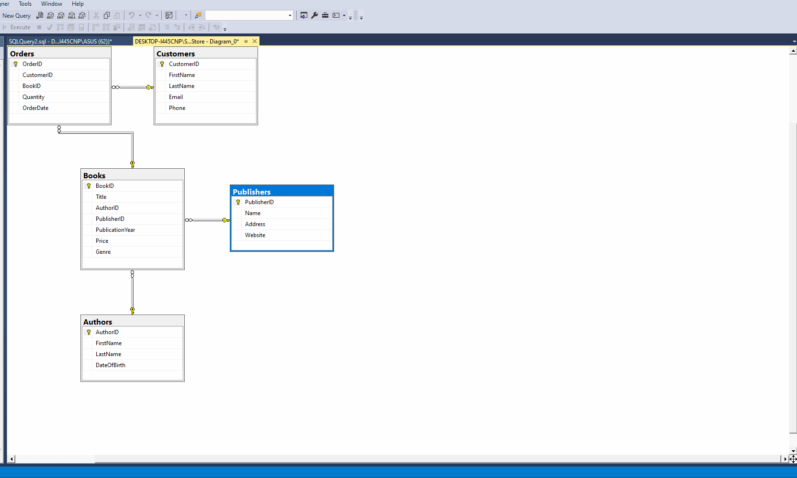

Overview
This project is dedicated to practicing Microsoft SQL Server operations. It contains scripts for creating and manipulating a sample database named BookStore.
Structure
The project is organized into two main folders:
DDL (Data Definition Language)
- This folder contains scripts for creating, altering, and dropping tables and other database objects. These are commands like CREATE, ALTER, DROP, etc.
- Scripts for creating the BookStore database and its tables are located here.
DML (Data Manipulation Language)
- This folder contains scripts for manipulating data within the existing schema. These are commands like SELECT, INSERT, UPDATE, DELETE, etc.
- Scripts for inserting initial data into the BookStore tables are found here.
Demo
